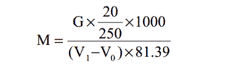
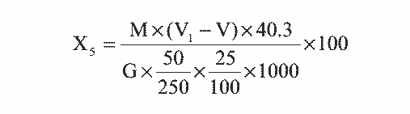

式中： M——EDTA 标准溶液的摩尔浓度，摩尔/升；
式中： M——EDTA 标准溶液的摩尔浓度，摩尔/升；V——滴定消耗 EDTA 标准溶液的体积，毫升；
56——氧化钙的摩尔质量，克/摩尔；
G——试样的质量，克。
在 pH5.5 时，铁、铝离子与醋酸钠反应，生成碱式醋酸盐溶液沉淀，与钙、镁离子分离。 然后用 EDTA 滴定法进行氧化钙和氧化镁的测定。
1. 40%氢氧化钠溶液。
2. 20%氢氧化钾溶液。
3. 1+2 硝酸溶液。
4. 12%醋酸钠溶液。
5. 1+3 三乙醇胺溶液。
6. 钙指示剂——称取 1g 钙指示剂与 100g 干燥无水硫酸钾固体研磨混匀，贮存
于棕色瓶中。
7. 酸性铬兰 K—萘酚绿 B 指示剂——称取 0.1g 酸性铬兰 K 和 0.26g 萘酚绿 B
置于研钵中，加入 10g 干燥无水硫酸钾固体，研磨混匀，贮存于棕色瓶中。
8. 氨—氯化铵缓冲溶液——称取 54g 氯化铵溶于水中，加 350mL 氨水，用水稀
释至 1000mL。
9. 0.01mol/L EDTA 标准溶液。
称取乙二胺四乙酸二钠 3.72g 溶于 1000mL 水中，冷却，摇匀。
称取 0.2g 于 800℃灼烧至恒重的基准氧化锌（称准至 0.0002g）用少许水湿润，加 2mL6mol/L 盐酸至样品溶解，移入 250mL 容量瓶中（用水稀释至刻度）。 吸取此溶液 20mL，79 移入 250mL 锥形瓶中，加 30mL 水。用 10%氨水中和至 pH7～8（稍有氨味）， 加 5mL 氨— 氯化铵缓冲溶液，加 2～4 滴铬黑 T 指示剂，用 EDTA 溶液滴定至溶液由酒红色变为天蓝色。 同时作空白试验。
EDTA 标准溶液浓度 M（摩尔/升）， 按下式计算：

式中： G——氧化锌的重量，克；
V1——EDTA 溶液的用量，毫升；
V0——空白试验 EDTA 溶液的用量，毫升；
81.39——氧化锌摩尔质量，克/摩尔。
滴定管： 25mL。
吸取测定酸不溶物后的滤液 50mL 于 250mL 锥形瓶中，用 40%氢氧化钠溶液中和至呈
现混浊，再加 1+2 硝酸使沉淀刚溶解，然后加入 12%醋酸钠溶液 10mL 煮沸 2～3 分钟，使
沉淀凝聚，稍冷后移入 100mL 容量瓶中，冷却后用水稀释至刻度，摇匀，澄清后用快速滤
纸干过滤。
吸取上述干过滤后溶液 25mL，移入 250mL 锥形瓶中，加入约 50mL 水及 1+3 三乙醇胺 5mL， 20%氢氧化钾溶液 5mL，摇匀，加入钙指示剂约 30mg。用 0.01mol/L EDTA 标准溶液 滴定至纯蓝色为终点。
吸取上述干过滤后溶液 25mL，移入 250mL 锥形瓶中，加入约 50mL 水及 1+3 三乙醇胺 5mL，pH=10 的氨—氯化铵缓冲溶液 10mL，摇匀，加入酸性铬兰 K—萘酚绿 B 指示剂约 30mg， 用 0.01mol/L EDTA 标准溶液滴定至纯蓝色为终点。
1. 氧化钙含量 X4（ %）， 按下式计算：
式中： M——EDTA 标准溶液的摩尔浓度，摩尔/升；
V——滴定消耗 EDTA 标准溶液的体积，毫升；
56——氧化钙的摩尔质量，克/摩尔；
G——试样的质量，克。
2. 氧化镁的含量 X5（ %）， 按下式计算：

式中： V1——滴定消耗 EDTA 标准溶液的体积，毫升；80
V——滴定氧化钙含量时消耗 EDTA 标准溶液的体积，毫升；
M——EDTA 标准溶液的浓度，摩尔/升；
40． 3——氧化镁的摩尔质量，克/摩尔；
G——试样的质量，克。
平行测定两结果差不大于 0.5%。
取平行测定两结果的算术平均值，作为垢样中氧化钙、氧化镁的含量。